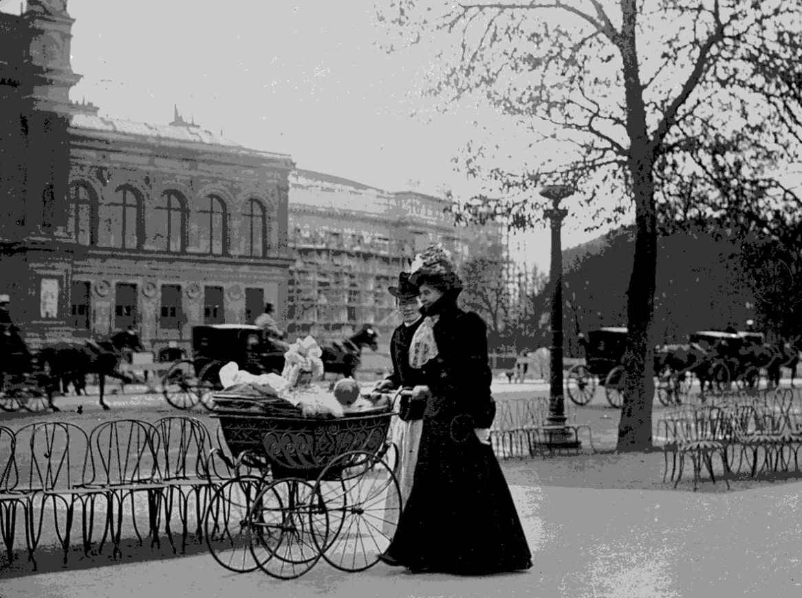
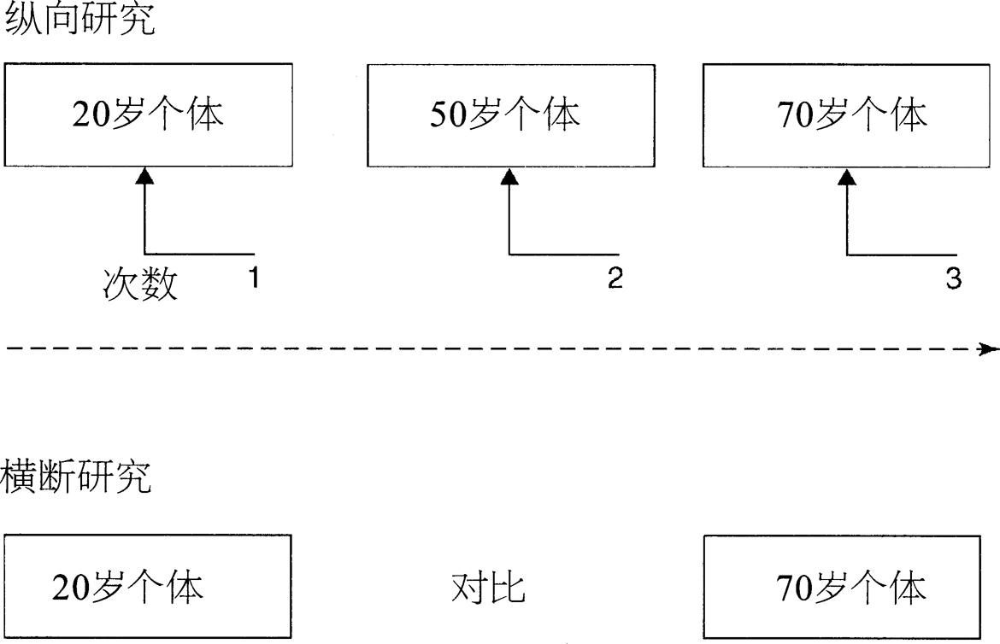
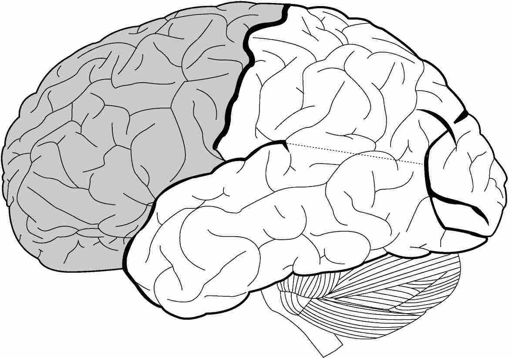
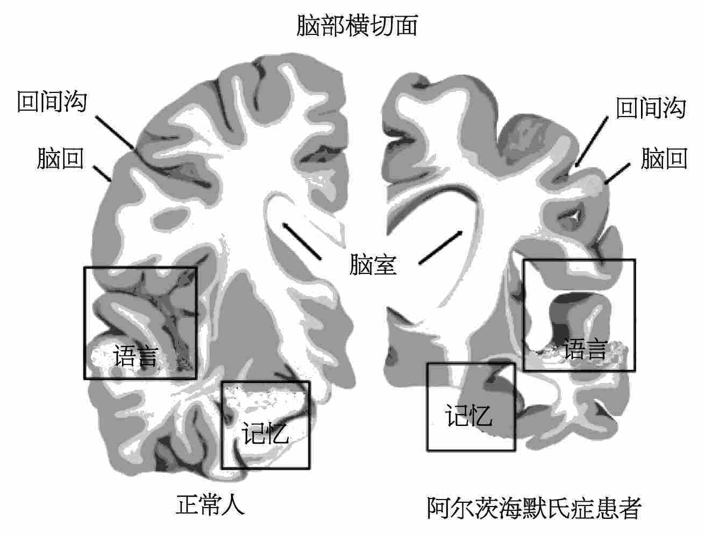

基于第一章所阐述的记忆编码、存储和提取三者的区分，记忆的发展可以定义为逐步发展出更为复杂的记忆编码和提取策略的过程（在记忆发展过程中，记忆的存储能力基本保持稳定）。当语义知识和语言能力更为丰满时，这一过程就变得更显著。例如有证据表明，随着语义知识的增长，人们从永久记忆中提取信息的能力会增强。而当儿童具备了一定的语言能力后，他们就能用更丰富的言语标签对材料进行编码，并利用这些语义标签作为提取时的线索。还有证据表明，各种认知能力的提升对于记忆容量存在着正面影响，例如，解决问题和假设检验的技能提升之后，人们能够更好地提取记忆，并判断提取出的信息是否真实。
有证据表明，外显记忆的容量是逐步发展起来的。例如婴儿就已具备一定的再认能力，可以辨认出照料者的面容。最基本的回忆能力在婴儿五个月左右时就已出现。大量的证据说明，即便是语言学习期之前的幼儿，也已体现出持久而确切的记忆。研究者通过不涉及语言的方法在这方面累积了大量的发现，例如通过对比、习惯化、条件作用和模仿的方式对婴幼儿进行考察。研究者还从对非人灵长类动物的研究中借用、改良了一些方法，例如延迟反应任务、延迟非匹配样本。罗伊· 柯利尔等学者提出，幼儿和成年人记忆过程的基本机制是一致的：信息会被逐渐遗忘，经由提示可以恢复，与之前信息重合的新信息会对记忆进行修改。但是，当儿童逐渐成长，他们就能在更长的时间间隔以后、通过各种不同类型的提取线索来更快地提取信息。
关于内隐记忆（或者说无意识记忆，参见第二章）的研究表明，幼儿三岁的时候，内隐记忆就已发展完全了，比如他们已经可以进行感知学习、具有语言启动效应。值得注意的是，在儿童成长过程中，这部分记忆并没有表现出跳跃式的增长，这可能是因为承担这部分记忆功能的大脑区域从进化上来说是较早被固定下来的。事实上，内隐记忆在幼儿期之后就几乎不再发展了。与此不同的是，元记忆技能（对记忆过程本身的理解和管理）是逐步发展起来的，例如儿童会逐渐明白自己在什么情形下记忆表现较好或较差，以及自己有多大可能记住特定的信息。研究也显示，相对于更“核心”的记忆能力（编码、存储和提取），元记忆能力的成熟相对较晚，这可能与大脑额叶的神经成熟相对较晚有关，要到青春期才逐渐发展成熟。从名称可以看出，额叶位于人类头颅的前侧。比起其他哺乳动物，人类的额叶显得异常发达。我们稍后还会在本章中对大脑的这一部分进行深入讨论，探讨它在人类衰老过程中的意义。
我们还没有能够完全解开人类记忆的发展之谜。儿童的知识水平及其他的能力状态（例如语言能力和视觉空间能力）都会对记忆产生影响，这点当然非常重要。但是大脑的神经成熟和其他生物因素可能也非常重要。关于儿童记忆的一个有趣现象至今仍然是颇为神秘的，这就是“婴幼儿期记忆缺失”的发生：大多数人无法有效地记住自己四岁前的经历。我们现在还不清楚这个现象是哪种原因引起的，是与生理发育过程相关，还是不同人生阶段下心理状态的改变所致？抑或是以上两种原因的交织？有一种观点认为，四岁之前的记忆可能仍然存在，但这种记忆具有特殊的神经形式和心理形式，这意味着个体无法从其中提取到任何特定的经验。
瑞士著名的发展心理学家让· 皮亚热曾写下一则趣事，充分体现了婴幼儿期记忆缺失的特征和童年记忆那引人入胜的品质。他写道：“我最初的记忆，如果是真的话，该是在我两岁的时候。直到现在我还能清晰地看见那个场景，那个我直到15岁都一直深信的场景：我坐在婴儿车里，保姆推着我走在香榭丽舍大道上，这时一个男人出现了，想要绑架我。我被安全绳牢牢地绑着，我的保姆勇敢地试图挡在我和歹徒之间，她身上多处被歹徒抓伤，我还依稀记得她脸上的抓痕。这时候人群拥了过来，一个穿着短斗篷、拿着白色警棍的警察出现并制伏了歹徒。我仍然能记得这整件事情的经过，甚至记得这是发生在地铁站边上。在我15岁那年，我的父母亲收到了一封来自这位保姆的信，信中说她皈依了救世军。她在信中忏悔了自己做错的事情，尤其还要归还我父母为了感谢她救我而送她的那块手表。她说她编造了整个故事，伪造了抓伤的伤痕。我当时很年幼，我的父母相信了她的故事，而我只是从他们那里听到了整个故事，并将其转化成了视觉记忆。”
就像皮亚热的经历一样，年龄大些的孩子和成年人往往对早年的经历有更为翔实的记忆，却很难说出这些回忆片段的起源，这往往是由于儿童期的记忆语境比较不稳定。皮亚热所谓的“回忆”其实是保姆口述的故事，他却“还能清晰地看见那个场景”。在他的幼年期，他显然并不知道保姆是这一视觉记忆的来源，而事实上什么都没有发生。此外，早期的记忆很难确认准确的来源，因为这些记忆被提取（并重新编码）了太多次，无法可靠地与某个具体的时间或地点联系起来。我们之前探讨过，在编码和提取过程中，情境的转换会对回忆效果产生影响（见第三章），而当成年人试图提取童年时期编码的记忆时，这一点体现得尤其明显。这些可能性并不相互排斥，却很难通过系统、科学的方式研究清楚。
如我们在第四章中看到的，我们的记忆很容易发生扭曲。而这一点在我们回忆童年时体现得尤为明显，因为我们无法明确记忆的来源和情境。这对我们考虑目击者证词的有效性也具有重要的意义。有很多证据显示，对于他们自己生活中的重要事件，儿童有能力提供准确的目击证词；但是相关文献同时也提出，和成年人一样，儿童的记忆也很容易被错误信息所误导，而且可能比成人更容易被误导。
有一个问题与我们每个人都相关，那就是年龄增长后的记忆容量问题。每个人都经历过记忆的丢失、减退和偏差。但对年长的人而言，这些现象更可能被自然而然地归结为衰老的结果，而不是由于普通的个体差异。这个重要的归纳早在几个世纪前就由著名的学者、智者及讲故事者塞缪尔· 约翰逊提出了。他写道：

图17 年龄大些的孩子和成年人往往对早年的经历有更为翔实的记忆，却很难说出这些回忆片段的起源，这往往是由于儿童期的记忆语境比较不稳定。皮亚热显然能“记得”他坐在婴儿车里，在香榭丽舍大道上遭到了突然的绑架袭击，即使他现在知道，这一切实际上从未发生
大多数国家的人口平均年龄都在不断增长，而且这一趋势很有可能会延续下去，因此我们很有必要了解衰老对记忆力的影响，这种影响（如果确实有的话）是否在科学上得到了证实。在这一领域内，有一些重要的方法论问题需要事先考虑到。例如，如果现在将20岁年龄组和70岁年龄组进行对比，除了年龄的差异，还有很多其他因素可以解释这两组个体之间记忆力表现的差异。就其曾经接受的教育和医疗质量而言，70岁年龄组明显不如20岁年龄组。如果我们要对比20岁年龄组和70岁年龄组的记忆容量，这些外部的干扰因素会影响我们对两个年龄组记忆力差别的研究。
对比20岁年龄组和70岁年龄组的记忆力，这是横断 实验设计的一例。与之对应的是纵向 研究，这种研究方法针对的是同一人群，纵贯他们从20岁到70岁的生命期，跟踪观察这同一群人 随年龄增长呈现出的记忆能力改变。纵向研究的优势是，我们是针对同一群人来研究他们的记忆能力如何变化。但值得注意的是，纵向研究的对象中往往会存在高于正常比例的“高功能”人群，也就是那些记忆留存能力及其他感知能力都更为优秀的个体，这些人有时也被称为超常参照体 或超常个体 。换言之，在纵向研究中常有可能发生的是，在研究中受到正向鼓励的个体（因为他们保留了较好的能力）往往继续参与研究，而表现不好的个体会退出研究，这就可能使研究者过于乐观地评估衰老对记忆的影响。另一个问题是，要去找一群愿意连续50年参加纵向研究的人实在是太难了！总而言之，横断研究和纵向研究都各有利弊。
如果我们综合考虑横断研究和纵向研究的结果，就可以得到一些关于衰老和记忆的一致结论。值得注意的是，儿童和老年人在记忆容量方面的表现有许多类似之处。
短时记忆在年长的个体身上仍是相当稳定的，但是需要工作记忆参与的任务通常会受到年龄增长所带来的负面影响（关于短时记忆和工作记忆的区别，请参看第二章）。因此，当需要使用认知能力时（有别于被动存储信息的短时记忆），年龄增长所带来的记忆缺陷就会变得更明显。例如，当人们反过来背诵一串数字时，会比按原顺序背诵数字时更多地体现出年龄的负面影响。

图18 在纵向研究中，我们会持续研究同一群人，纵贯他们20岁到70岁的生命期。而将现在20岁的人群与现在70岁的人群进行对比，则是横断研究的一例。两种研究方法各有利弊
随着个体的衰老，外显长时记忆（即被明确意识到的记忆经历，参见第二章）任务的表现通常下降得非常明显。随着年龄的增长，虽然再认的表现仍能保持良好，但自由回忆的表现下降得很明显。不过，当有关熟悉度的因素参与进来，再认能力也会随情况而发生质的改变。所以，当再认需要用到情境记忆（即再认记忆中更具追忆性质的那部分，见第三章），记忆的缺陷就会伴随衰老而出现。这或许意味着年长的人与幼儿类似，更容易受到暗示和偏见的影响。这在现实生活中可能会带来严重的后果，例如当年长的人基于以往的记忆去作有关金融财产的重要决定时。
至于内隐记忆（即无意识的记忆，无法直接回忆出记忆经过，通常需要通过衡量行为的改变来对此进行间接测量），随年龄增长的退化并不显著。例如，希尔在1957年所进行的打字实验就支持了这一结论。这个研究很有趣，希尔在30岁时学习打字，录入了一段文字，后来在55岁和80岁时就此对自己再次进行了测试！所以，内隐记忆不仅在儿童期成熟比较早，而且随着年龄的增长也相对保持得较好。
年龄的增长对语义记忆的影响不大。事实上，语义记忆似乎还会随着年龄的增长而进一步提升。人们的词汇量和知识积累通常伴随着年龄的增长而增加，尽管他们可能会在提取相关信息时遇到更多的问题，例如我们前面章节中探讨过的“话到嘴边说不出来”。有学者提出，语义记忆中的信息随着年龄增长而不断累积，这可以解释为什么那些对语义知识要求较高的职务通常都由年长的人来担任，例如高等法院的法官、小说家、公司的董事长、军队的司令、教授、将军等。
有证据表明，主导记忆策略和组织的额叶的退化，或许是与年龄相关的记忆退化的原因之一。在本章上文中我们说过，人类的额叶相比于其他物种显得异常发达。我们已经注意到，儿童元记忆（即意识到自己记忆力的能力）的发展似乎也和额叶的成熟相关，同样也有证据显示，与年龄相关的元记忆障碍与额叶功能的衰退有关。前瞻记忆，也就是记得未来要处理的事件的能力，是另一种和额叶功能相关的记忆，证据显示这一记忆能力会受到年龄增长的负面影响。归结起来，额叶在幼年期成熟得相对较晚，但随着年龄增长又衰退得较早。与此一致的是，儿童和老年人都容易出现与额叶相关的记忆障碍。
另外一些证据表明，与年龄相关的记忆容量减少，也与年老后认知处理的速度下降有关。还有学者提出，与年龄相关的记忆力减退也是由于年老后压抑减少、注意力不足，并且缺少来自记忆情境和周围环境的支持。这些有关衰老的“额叶假说”各自都存在着局限，但它们都引出了很有趣的研究课题。

图19 有证据显示，额叶（人类的额叶比起其他的哺乳动物显得异常发达，图中左侧的灰色阴影区域即为额叶）的成熟相对较晚，衰退相对较早，这对人类记忆的形成和组织产生了影响
吸引了许多研究者兴趣的问题之一是：正常衰老所导致的记忆障碍，是否预示着未来脑力的下降？介于正常衰老和临床痴呆之间的中间状态被称为“轻度认知障碍”。轻度认知障碍可能仅仅与记忆相关，有可能与多个认知领域相关。大部分被确诊的患者似乎都在几年内进展为全面的痴呆，但有一些患者则不然。由于现在许多国家都将人口老龄化视作一枚“人口定时炸弹”，因此相关研究得到了大量的投入，人们希望找到从轻度认知障碍发展至痴呆的决定因素。例如，最近一些研究结果显示，运动和健康饮食（尤其是饱和脂肪酸含量少、抗氧化物含量多的饮食）不仅有利于机体健康，也有助于老年人保持大脑的正常运作。
除此之外，脑力训练（例如填字谜、下象棋，或者学习些新知识，比如关于信息技术的知识）也有助于维持神经功能和心理功能。研究显示，在人的一生中，大脑都保持着一定程度的生长和修复能力，这种能力可以通过脑力活动和训练而激发。就构建老年人的理想生活环境而言，这是尤其重要的一个考虑因素。例如有的老人由于身体虚弱或认知困难需要长期居住在养老院，但他们同样也需要参与适当的脑力活动和训练。海马体是大脑中重点参与记忆整合的部分，它对于情景记忆的整合尤其重要（参见第二章和第五章），而海马体对脑力训练尤其敏感，在脑力刺激和锻炼之后更易于出现神经元再生和连接性增强的现象。
对与年龄相关的临床障碍而言，记忆障碍通常是痴呆的前兆。情景记忆与海马体功能的障碍，是最常见的老年痴呆症——阿尔茨海默氏症——的前兆。在病症的早期，情景记忆障碍可能单独出现，但在痴呆症后期，许多其他的认知能力，例如语言、感知、执行能力等等都会受到影响。还有学者提出，工作记忆的中央执行系统（参见第二章）会受到阿尔茨海默氏症的不同程度的影响。与选择性失忆的患者不同，阿尔茨海默氏症患者在内隐记忆和外显记忆测试中都体现出功能损伤，在病症后期尤为明显，这表明这一灾难性的疾病造成了进展性的大脑损伤。另一种神经组织退化性疾病被称作“语义痴呆”，与阿尔茨海默氏症不同，语义痴呆的主要表现是语义记忆（参见第三章）的深度损坏，这会导致患者甚至无法识别原本熟悉的事物，比如茶杯、盘子、汽车。

图20 这张图显示了阿尔茨海默氏症患者萎缩了的脑部（右侧），与健康老年人的脑部（左侧）形成对比。服务于情景记忆的脑部区域在这一疾病早期就会受到影响
目前，治疗阿尔茨海默氏症的药物只能对表面症状（例如神经传导的减少）起作用，而无法消除根本的病因。对于阿尔茨海默氏症这样的神经组织退化疾病，目前的治疗手段也无法阻止它们的不断恶化。未来，这有望通过干细胞治疗和脑修复术得到解决。此外，认知功能康复技术能够最大限度地利用神经元退化疾病患者的现有记忆容量，这有助于提升患者的自信、情绪状态以及机体功能（参见第七章）。
随着越来越多检测和治疗方法的出现，专家们也更加努力地研究用于评估记忆和认知功能的手段，希望这些手段能有针对性地适用于轻度认知障碍和痴呆症。如果认知功能的衰退可以被及早发现，我们就更有可能展开有效的治疗，阻止病症的进一步恶化。